Evidências: o que cada print prova
Cada imagem responde a uma exigência do edital. Saber qual mostrar em cada momento é tão importante quanto saber o que ela significa — a apresentação fica muito mais forte quando o print aparece no instante certo.
Não mostre os 21 prints. Mostre seis, nesta ordem: 5pods.png (o ambiente existe),
hostPID_kubernete.png (a API vê o SO), nginx-k8s.png (os 3 daemons funcionam no cluster),
RecriacaoPod.png (self-healing), hpa.png (scaling) e replicasVoltando2.png (volta ao normal).
O resto fica como anexo no artigo.
Cada tarefa foi registrada pelo integrante responsável — por isso o hostname do terminal muda entre os prints
(diogo@... na Tarefa 1, rickd@... nas Tarefas 2 e 3). Os prints da Tarefa 3 formam o
ambiente de referência da demonstração: são todos do mesmo cluster, na mesma máquina.
Tarefa 1 — API FastAPI + psutil
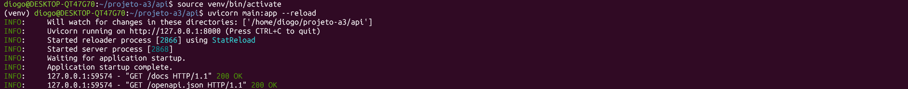
"Isso é local ou no cluster?" — Local. Serve para mostrar que o código funciona antes da containerização; a prova no cluster é o ProcessManagerAPI.png.
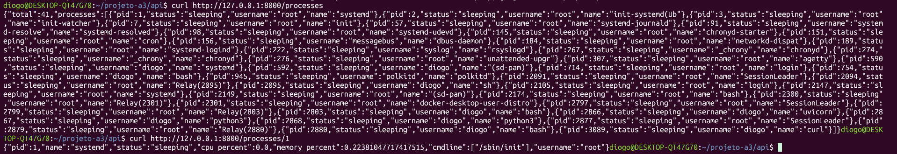
curl /processes (41 processos) e curl /processes/1 (systemd). Prova que a API lê o SO via psutil e devolve JSON com os quatro campos."Por que o PID 1 é o systemd?" — Porque este teste rodou no WSL, sem container. No Pod da API, com hostPID: true, o processo entra no namespace de PID do nó e o PID 1 visível continua sendo o systemd; sem hostPID, o uvicorn é que seria o PID 1 do container. São três cenários diferentes, e confundir os três é uma pegadinha clássica.
Um print mostra 41 processos e outro mostra 40. Não é erro: processos nascem e morrem o tempo todo, e cada chamada é uma fotografia do instante. O que importa é a ordem de grandeza e o fato de aparecerem processos do SO.
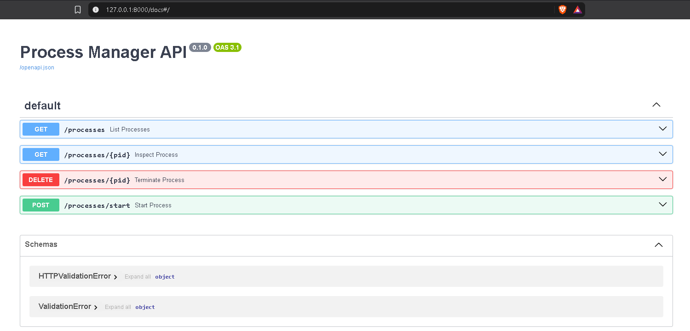
/docs com GET /processes, GET /processes/{pid}, DELETE e POST /processes/start. Prova os quatro requisitos do edital de uma vez.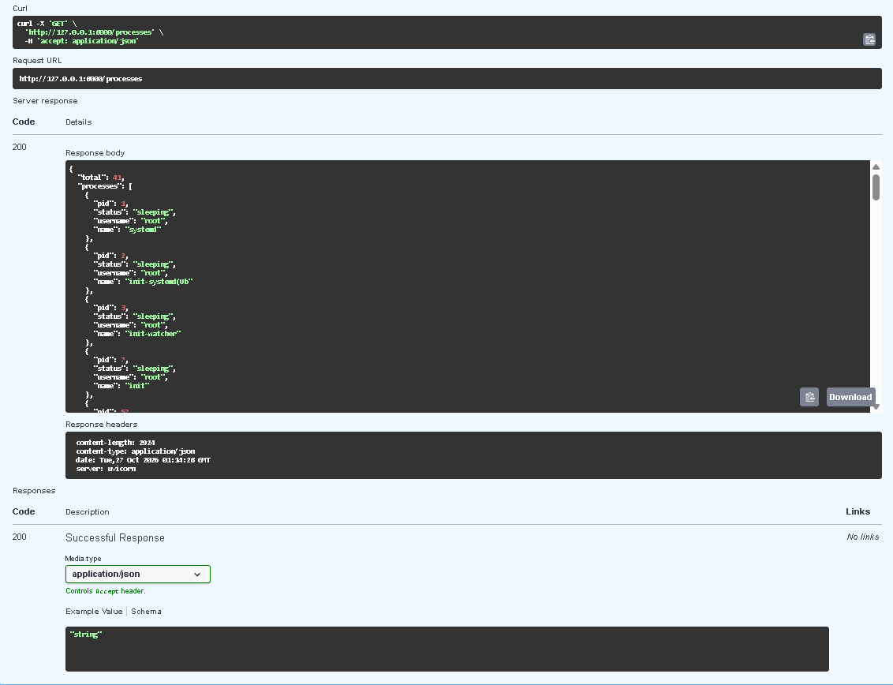
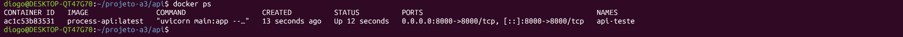
docker ps com o container api-teste expondo a 8000. Prova a containerização da API.Tarefa 2 — Nginx e Cron
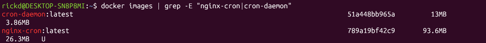
docker images com cron-daemon:latest (13 MB) e nginx-cron:latest (93,6 MB). Prova que as imagens foram construídas com os nomes exatos que os YAMLs usam; a diferença de tamanho é o peso da base (alpine puro × nginx:alpine).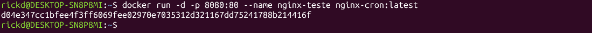
docker run -d -p 8080:80 --name nginx-teste nginx-cron:latest. Prova que a imagem é executável e que a porta 80 do container foi publicada como 8080 no host.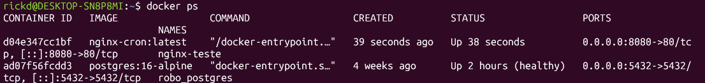
nginx-teste aparecendo no docker ps em 0.0.0.0:8080->80/tcp. Prova que o daemon web sobe sozinho e permanece no ar.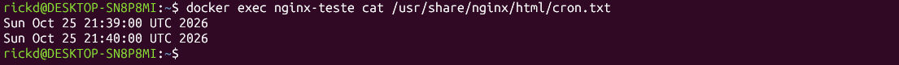
docker exec ... cat cron.txt com duas linhas de horário (21:39 e 21:40). Prova que o crond dentro do container do Nginx executou duas vezes, com um minuto de diferença."Como você sabe que o cron rodou e não que o arquivo já existia?" — Duas linhas com um minuto exato de diferença e o horário do teste. Um arquivo estático teria uma linha só.
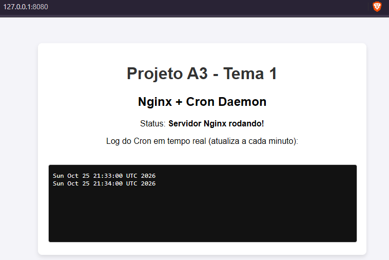
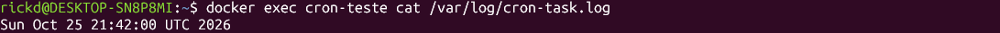
docker exec cron-teste cat /var/log/cron-task.log com o horário de execução. Prova o terceiro daemon, isolado do Nginx e com seu próprio arquivo de log.Tarefa 3 — Kubernetes
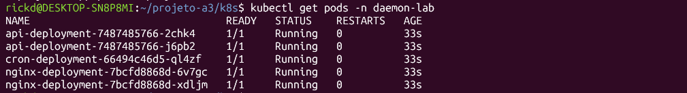
Running, 0 restarts. Prova o deploy base e a existência dos três daemons distintos dentro do cluster."Por que 5 Pods se o edital pede 3 containers?" — Porque são 3 workloads (3 imagens, 3 tipos de daemon); as réplicas são uma decisão de disponibilidade. O edital pede no mínimo 3 containers com daemons diferentes. Na contagem de processos, são 4 daemons: uvicorn, nginx, o crond dentro do container do Nginx e o crond isolado — o crond aparece duas vezes de propósito.
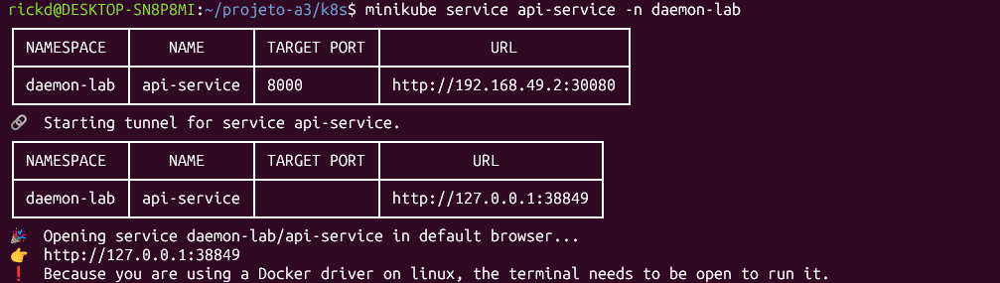
minikube service api-service mostrando 192.168.49.2:30080 e o túnel 127.0.0.1:38849. Prova o Service NodePort funcionando e explica por que o navegador do Windows precisa do túnel.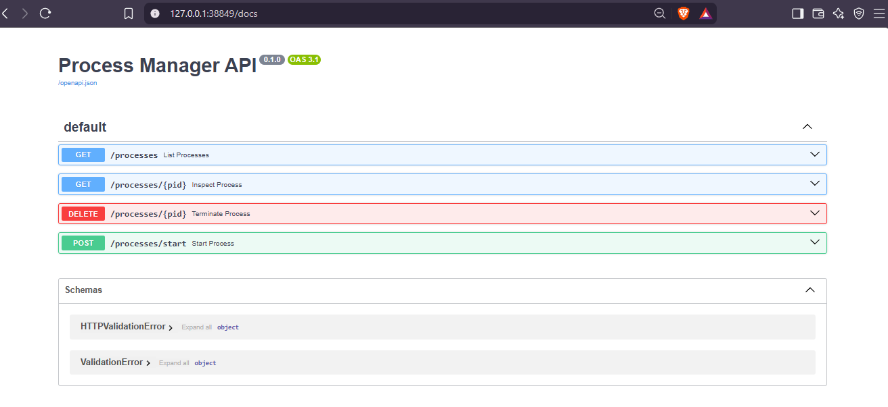
127.0.0.1:38849, que é o túnel para o Pod. Prova que a API está rodando dentro do Kubernetes.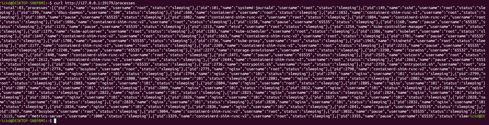
curl .../processes retornando 83 processos, incluindo kube-apiserver, kube-scheduler, etcd, kubelet, kube-proxy, containerd-shim-runc-v2, pause e até os processos dos outros containers (nginx, crond, busybox). É a prova central do hostPID: true."Como você prova que a API vê o SO e não só o container?" — Porque aparecem processos que não poderiam existir dentro do container: o kubelet, o etcd e o kube-apiserver são do nó. Sem hostPID, a lista teria 3 ou 4 processos.
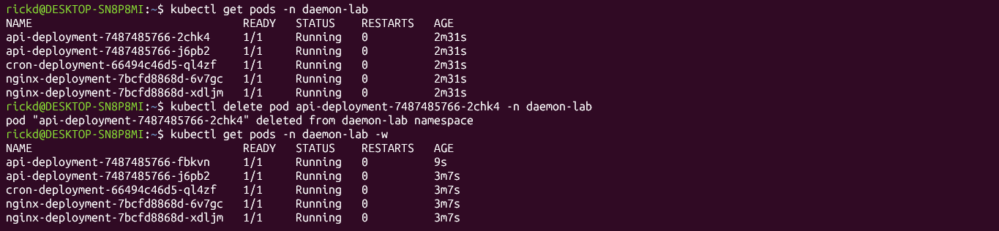
delete pod ...-2chk4 e, em seguida, ...-fbkvn já Running com 9s de idade. Prova o self-healing de Pod."Quem criou o Pod novo?" — O ReplicaSet controller, não o kubelet. O kubelet só executou o Pod que o control plane criou.
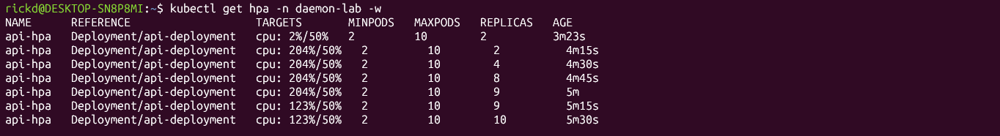
kubectl get hpa -w: CPU de 2% a 204% contra alvo de 50%, réplicas 2 → 4 → 8 → 9 → 10. Prova o scaling automático e o respeito ao maxReplicas.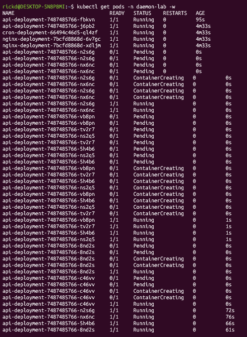
Pending/ContainerCreating/Running. Prova que o HPA realmente criou Pods, não só mudou um número."Por que vários aparecem Pending?" — Porque o nó é único e os Pods competem por CPU; o scheduler coloca o que cabe e o resto espera. Num cluster multi-nó eles seriam distribuídos.
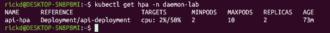
REPLICAS 2, cpu: 2%/50%, idade de 73 min. Prova o scale-down: sem carga, o HPA volta ao mínimo.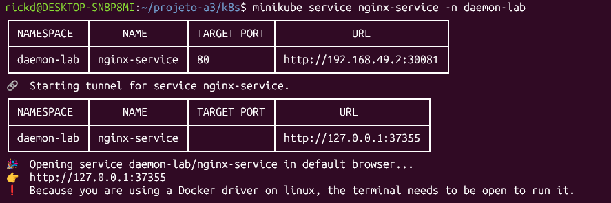
minikube service nginx-service com 192.168.49.2:30081 e túnel 127.0.0.1:37355. Prova o segundo Service NodePort.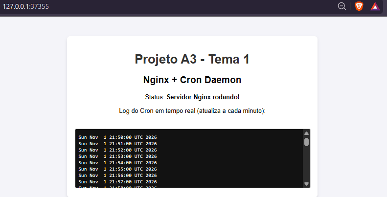
127.0.0.1:37355 com o log do cron de 21:50 a 21:58. Prova o Nginx rodando como Pod, com o crond escrevendo a cada minuto.Antes dele, o Nginx só tinha sido demonstrado via Docker. Com ele, os três daemons ficam provados dentro do cluster: API (Swagger), Nginx (página) e cron (log com várias linhas acumuladas).
Um kubectl get svc -n daemon-lab mostrando os dois Services lado a lado. O nginx-k8s-terminal.png cobre a
informação, mas se a banca pedir "mostre os serviços", tenha o comando pronto para rodar ao vivo em vez de procurar print.